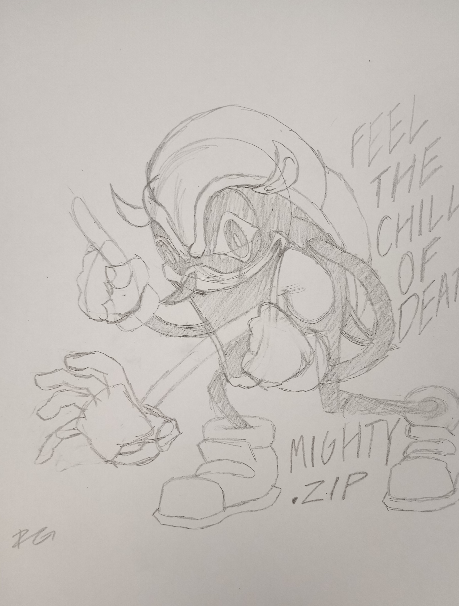
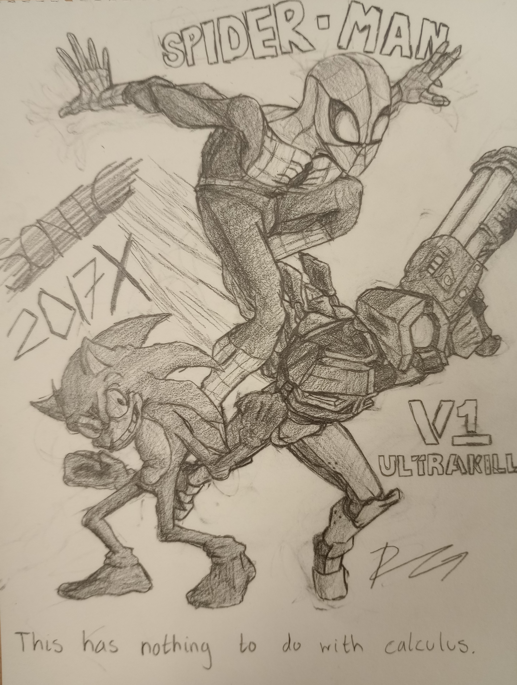
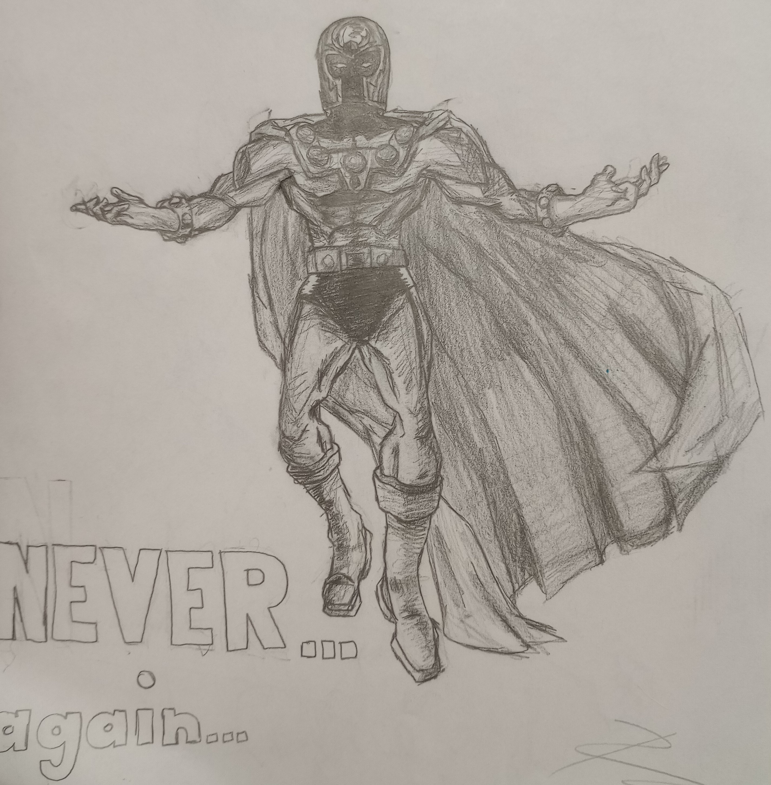
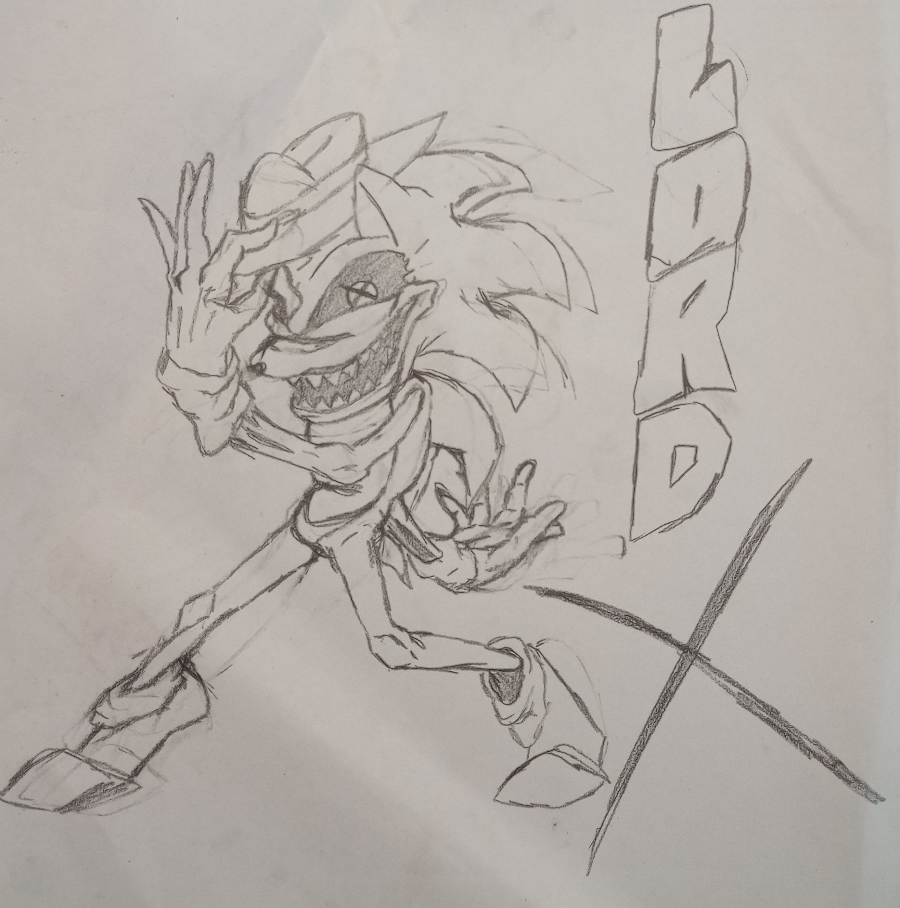

I'm currently attending college at UTRGV with a major in Computer Science, with hopes of being able to make games in some way, be it coding, modeling, storyboarding, animating, designing, really anything. I like games, I've had them at all times in my life, and I think it would be nice to help make one. I'm only starting my CS degree, but I have already started other aspects of furthering my career!
See those little spinning things in the background? I made those! in a 3d modeling and animation software called-
(Click the image if you wanna take a gander at blender
It's frustrating, but we're in a CS class. I think we all have already learnt to deal with that...)
I used to draw a lot back then, but I don't really draw that much anymore, but you can see some sketches I was proud of enough to keep on my phone here.


What I really focus on nowadays however, is what you are seeing right now! A whole website made in html and css, and as per usual learning is incredibly frustrating! I have so many complaints and am filled with rage, how has anyone dealt with this before? How do I have two seperate texts on the same line? How do I make images have the same width and height without distorting them? How do I make everything scale with the window changing sizes? Why can't I use the min or max function properly? Which one of these units responds to the window size? All questions I'm sure I'll spend several excruciating painful hours researching and ripping out my hair over that I'll be powerless to do anything about!